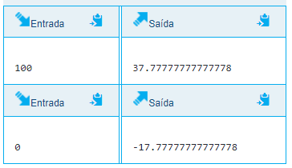

Atividade 3 - The Huxley
atividade valendo nota
Material de apoio para a disciplina Linguagem de Programação da UACSA/UFRPE
Produzido pelo prof. João Pimentel
A atividade 3 será feita com a ferramenta The Huxley, que você já usou para resolver a Atividade 2.
A atividade 3 tem quatro problemas que exercitam o cáculo de expressões matemáticas simples a partir de entradas da usuária (ou seja, com base em valores que a usuária digitou).
Recomendo olhar o enunciado do problema no The Huxley e responder primeiramente no repl.it, já que no repl.it é mais fácil de testar o nosso programa. Em seguida, é só copiar para o The Huxley e enviar a resposta.
Mas também pode ficar tranquilo(a), não tem problema se você enviar respostas incorretas no The Huxley antes de acertar - só será contabilizado o último programa que você enviou.
Lembre-se de escolher a opção Python 3 quando for escrever a resposta no The Huxley.

Sugiro começar pelo problema AC2 - Ex. 4, sobre conversão de temperatura.
O que irá aparecer na tela (saída) quando o seu programa for executado deve ser exatamente o que está especificado no enunciado:  Ex: Quando o usuário digitar 100, a saída será 37.77777777777778. Só isso! Não pode ser nem "Temperatura: 37.77777777777778", nem 37.78.Por exemplo, normalmente nós faríamos um programa que calcule o dobro de um número assim:
Mas para a ferramenta de correção automática, escreveremos assim, sem os textos:
a não ser que o enunciado do problema peça para incluir algum texto.
Alguns problemas, como o "Aluguel de carro", podem pedir que você mostre o resultado só com duas casas decimais. Você certamente já aprendeu a fazer isso com os vídeos do Guanabara, mas aqui vai um exemplo para facilitar a sua vida:
O problema AC2 - Ex. 5 é o mais complicado desta Atividade 3, na minha opinião. A dica para respondê-lo é usar divisão inteira e módulo (resto).
Não tente responder tudo de uma vez - primeiro descubra como calcular só os dias. Depois, pegue o restante do tempo e tente calcular as horas. E por aí vai, até conseguir responder o enunciado completo
Observe que já estou lhe dando a faca e o queijo, agora só falta a goiabada (ou o pão)!
Meu objetivo é dar as condições para que você aprenda. Se você optar pelo "atalho" de copiar as respostas, só quem perde é você mesmo(a).
Assim que você envia a resposta aparece o resultado de cada caso de teste do problema, na parte de baixo da tela. Os círculos vermelhos com X representam os erros, como na imagem abaixo.

Se clicar no círculo vermelho você poderá ver qual a entrada do caso de teste, qual o resultado esperado (gabarito), e qual o resultado que o seu programa deu. Isso lhe ajudará a corrigir o código.
Ainda não aprendeu a usar o The Huxley? Veja as informações sobre o cadastro e uso da ferramenta na descrição da Atividade 2.